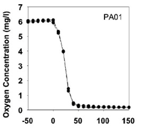
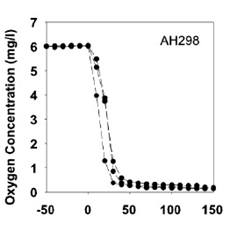
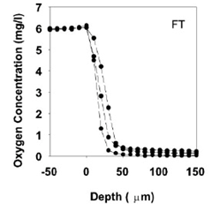

Biofilm
Rainbofilm
Sugarfilm
Parts
Achievements
Tools
Background
So far synthetic biologists have made tremendous effort in and below the cell level, such as manipulating gene regulations, modifying the metabolic pathways or producing specific proteins. However, engineering work done in higher levels remains rare. This year, ZJU-China has been focusing on the tissue level; we want to make cells differentiated within a natural bacteria ‘tissue’, biofilm.

Rani, S. A. et al. 2007. J. Bacteriol. 189(11):4223-4233
FIG. 1 Patterns of DNA synthesis in S. epidermidis colony biofilms. Panel A shows an unlabeled (no BrdU) colony biofilm probed with antibody. Panel B shows a colony biofilm labeled with BrdU under aerobic conditions. Panel C shows a colony biofilm labeled with BrdU under anaerobic conditions. Panel D shows a colony biofilm labeled with BrdU in an environment of pure oxygen. Green areas are due to BrdU incorporation into DNA and indicate active replication. Red areas are due to rhodamine B counterstaining that reveals the extent of the biomass independent of its activity. In each image, the membrane interface of the colony is on the bottom and the air interface is on the top.

Rani, S. A. et al. 2007. J. Bacteriol.
FIG. 2 Patterns of DNA synthesis in S. epidermidis drip-flow (A) and capillary (B) biofilms and overlay of DNA synthetic activity and protein synthetic activity in the same S. aureus colony biofilm (C and D). In panels A and B, green areas are due to BrdU labeling and red areas are due to rhodamine B counterstain. In panel A, the substratum was on the bottom and the air interface was on the top. Flow was from top to bottom in panel B. In panel C, green areas are due to GFP expression and red areas are due to BrdU labeling. In panel C, the substratum was on the bottom, with the air interface on the top. Panel D shows the average fluorescence intensity along a linear transect across the section for the two signals. The position indicated on the x axis is arbitrary. The intensities indicated on the y axis of panel D are arbitrary as they result from automatic scaling by the digital image acquisition system.
Biofilm is a complex self-organized bacteria community with special spatial structure. One thing interesting about it is that from the surface to the bottom, the bacteria maintain different physiological states in a layered fashion. Both DNA synthesis and protein expression is highly stratified within the biofilm. (Fig.1, Fig.2, Philip S. Stewart, 2007) These varied layers can be characterized by gradients in the concentrations of oxygen, nutrients, and metabolic waste products. The external differences result in the differentiation of gene transcription and protein expression patterns. Among all the factors, oxygen is the most well studied one. (E. Werner, 2004).
|
 Figure 1 |
 Figure 2 |
 Figure 3 |
Appl Environ Microbiol. 2004 October; 70(10): 6188–6196
FIG.3 Oxygen concentration profiles for P. aeruginosa colony biofilms. Triplicate data sets are shown for each strain. Depth zero on the x axis corresponds to the air-colony interface.
We used different oxygen concentrations within the biofilm as signals to induce the expression of different proteins and thus created a new expression stratification system, as is indicated by the name ‘Rainbofilm’. It’s also the first attempt to utilize and modify bacteria biofilm as an extracellular scaffold. Besides, biofilm’s adaptability and resistance to environmental stress give our Rainbofilm a natural edge as a new application in synthetic biology.